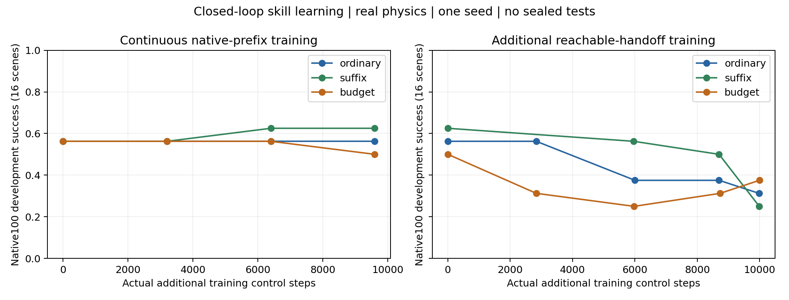
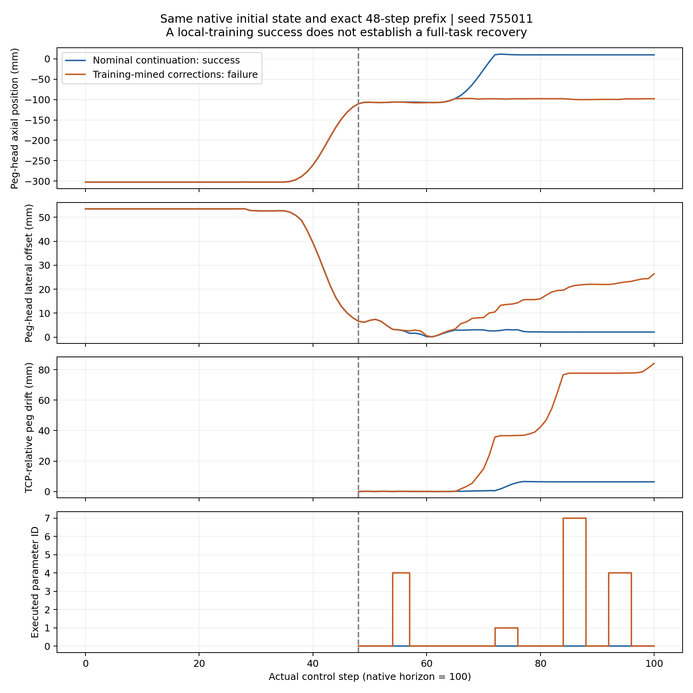

ARES SCI research · public ManiSkill GPU physics · native100 · 2026-11-04
16 seen development scenes; one seed. Full physical prefix, no handoff reset. fixed11: 9/16, retained_sac: 10/16.
| Method | 96 native episodes | ~10k local steps | Deployment-label ablation |
|---|---|---|---|
| ordinary | 9/16 | 5/16 | 9/16 |
| suffix | 10/16 | 4/16 | 7/16 |
| budget | 8/16 | 6/16 | 7/16 |
The deployment-label ablation starts from the96-episode parent, not the10k-step branch. Local training outcomes are excluded from full-task scores.

Six training-selected candidates: nominal6/6; rule6/6; mined corrections4/6. Identical native prefixes were physically verified. No rescue; two regressions.

Frame-linked interactive curvesComplete RAWVideo source SHA
Keep the closed-loop skill, persistent planning, conservative warmstart and measured SkillResult. The hazard candidate and scalar-value comparator are disclosed hypotheses/adaptations, not renamed original methods. Restored local states are training-only and not exact physical counterfactuals. CUDA/termination failures and all negative models remain archived.
Research conclusions and limitationsActual metrics and costsFabrica / SeqDex / SPIRE and competing priorReproduceAll archive members and SHA